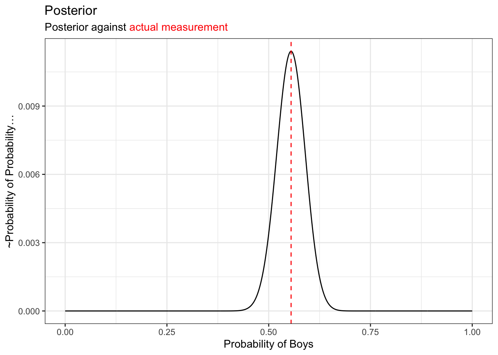
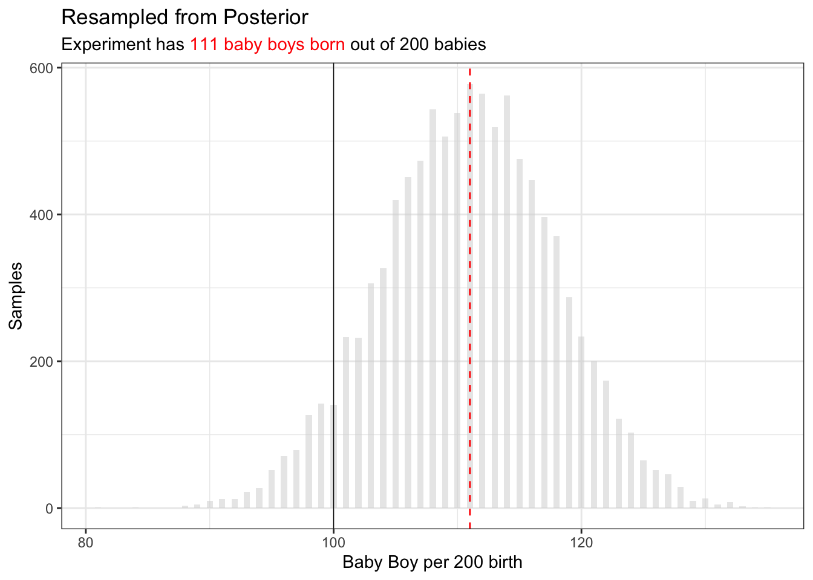
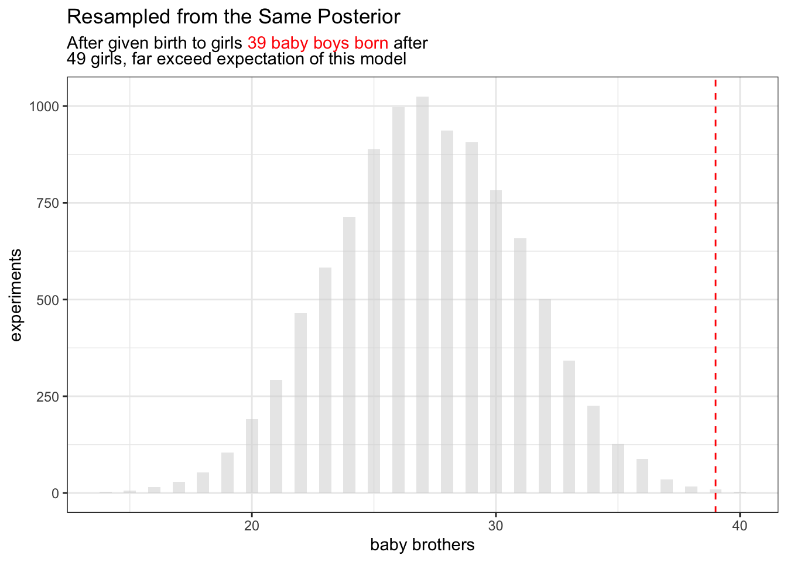

── Attaching core tidyverse packages ──────────────────────── tidyverse 2.0.0 ──
✔ dplyr 1.1.4 ✔ readr 2.1.4
✔ forcats 1.0.0 ✔ stringr 1.5.1
✔ ggplot2 3.5.0 ✔ tibble 3.2.1
✔ lubridate 1.9.2 ✔ tidyr 1.3.0
✔ purrr 1.0.1
── Conflicts ────────────────────────────────────────── tidyverse_conflicts() ──
✖ dplyr::filter() masks stats::filter()
✖ dplyr::lag() masks stats::lag()
ℹ Use the conflicted package (<http://conflicted.r-lib.org/>) to force all conflicts to become errorsQuize rewrite from Book: Rethink Statistics
Books
Note
My favorite Statistical Quize re-write.
First Birth Second Birth
Intro
In high-school Biology class, I was taught the probability of mother given birth to boys to girls is always “fifty-fifty”. There’s a catch. In China, I know a few relatives who are living in rural who are very conservative, would go all the way to have a boys.
With statistics, we can test that.
These data indicate the gender (male=1, female=0) of officially reported first and second born children in 100 two-child families.
birth1 <- c(1,0,0,0,1,1,0,1,0,1,0,0,1,1,0,1,1,0,0,0,1,0,0,0,1,0, 0,0,0,1,1,1,0,1,0,1,1,1,0,1,0,1,1,0,1,0,0,1,1,0,1,0,0,0,0,0,0,0, 1,1,0,1,0,0,1,0,0,0,1,0,0,1,1,1,1,0,1,0,1,1,1,1,1,0,0,1,0,1,1,0, 1,0,1,1,1,0,1,1,1,1)
birth2 <- c(0,1,0,1,0,1,1,1,0,0,1,1,1,1,1,0,0,1,1,1,0,0,1,1,1,0, 1,1,1,0,1,1,1,0,1,0,0,1,1,1,1,0,0,1,0,1,1,1,1,1,1,1,1,1,1,1,1,1, 1,1,1,0,1,1,0,1,1,0,1,1,1,0,0,0,0,0,0,1,0,0,0,1,1,0,0,1,0,0,1,1, 0,0,0,1,1,1,0,0,0,0)We are going to turn these boring 1 and 0 turns into insights.
Questions
These are the original questions:
Use
rbinomto simulate 10,000 replicates of 200 births. You should end up with 10,000 numbers, each one a count of boys out of 200 births. Compare the distribution of predicted numbers of boys to the actual count in the data (111 boys out of 200 births). There are many good ways to visualize the simulations, but the dens command (part of the rethinking package) is probably the easiest way in this case. Does it look like the model fits the data well? That is, does the distribution of predictions include the actual observation as a central, likely outcome?
In this example: Pior-belife is the birth of Boys can be any number out the 200,
## Gird Approximate Baysian ==================================
## create a even distributed point of p_grid
p_grid <- seq(from=0 ,to=1 , length.out=1000 )
## Prior: although piror is just one we are creating for good practice
prior <- rep(1 , 1000)
## Likelyhood:
boys = sum(c(birth1, birth2))
likelihood <- dbinom(boys , size=200 , prob=p_grid )
## Posterior:
posterior <- likelihood * prior
posterior <- posterior / sum(posterior)
## Plot =======================================================
p_to_posterior =tibble::tibble(p = p_grid, den = posterior)
posterior_g = ggplot(p_to_posterior) +
geom_line(aes(x= p, y = den)) +
geom_vline(aes(xintercept = boys/200), linetype = "dashed", color="red")
posterior_g +
xlab("Probability of Boys") +
ylab("~Probability of Probability...") +
ggtitle(
"Posterior"
,"Posterior against <span style='color:red'>actual measurement</span>"
) +
theme(
title = ggtext::element_markdown()
)
The posterior itself is description of probabilities. But resample can help explain this:
p_samp = sample(p_grid, prob = posterior, size = 1e4, replace=T)Sample from Posterior
## Sample Probabiles from Probabilies
ggplot() +
geom_histogram(
data=tibble(x= round(p_samp * 200))
,aes(x=x)
,binwidth=0.5
,alpha=0.5
,fill="lightgrey"
) +
geom_line(
) +
geom_vline(aes(xintercept = boys), linetype = "dashed", color="red") +
geom_vline(aes(xintercept = 100), linetype = "solid", linewidth=0.25,color="black") +
xlab("Baby Boy per 200 birth") +
ylab("Samples") +
ggtitle(
"Resampled from Posterior",
glue::glue("Experiment has <span style='color:red'>{boys} baby boys born</span> out of 200 babies")
) +
theme(
title = ggtext::element_markdown()
)
One would expect of 200 babies, there are 100 babies. But in fact the expected baby count is much higher.
This sample some-what represent experiment and represent the posterior function.
One way to discribe shape in number is HDIV (Highest Density Interval)
bb_boys = sort(p_samp * 200)
## vectorized function for finding highest interval
find_hdiv = function(v,p) {
v = sort(v)
n_win = ceiling(length(v) * p)
itr = 1:(length(v) - n_win + 1)
l_bonds = v[itr]
r_bonds = v[itr + n_win - 1]
i = which((r_bonds - l_bonds) == min(r_bonds - l_bonds))
return(unique(cbind(l_bonds[i], r_bonds[i])))
}
find_hdiv(bb_boys, 0.95) [,1] [,2]
[1,] 97.4975 124.5245We can say of 200 birth, we expect probabily 95% of the time between 97 - 124 baby boys.
3H5. The model assumes that sex of first and second births are independent. To check this assumption, focus now on second births that followed female first borns. Compare 10,000 simulated counts of boys to only those second births that followed girls. To do this correctly, you need to count the number of first borns who were girls and simulate that many births, 10,000 times. Compare the counts of boys in your simulations to the actual observed count of boys following girls. How does the model look in this light? Any guesses what is going on in these data?
Richard McElreath suggest you can again, explore this topic by resample model posterior.
## first born is girl
b01 = birth2[birth1 ==0]
## okay sample the same size
boy_after_girl = rbinom(length(p_samp), size = length(b01), prob = p_samp)
ggplot() +
geom_histogram(
data=tibble(x=boy_after_girl)
, aes(x=x)
,binwidth=0.5
,alpha=0.5
,fill="lightgrey"
) +
geom_vline(aes(xintercept = sum(b01)), linetype = "dashed", color="red") +
xlab("baby brothers") +
ylab("experiments") +
ggtitle(
"Resampled from the Same Posterior",
glue::glue("After given birth to girls <span style='color:red'>{sum(b01)} baby boys born</span> after<br> {length(b01)} girls, far exceed expectation of this model")
) +
theme(
title = ggtext::element_markdown()
)
So perhaps the gender are dependent after all?
The quiz has end here, but as a data analyst, I wonder how I would do this before I know any Bayesian statistics.
birth1 <- c(1,0,0,0,1,1,0,1,0,1,0,0,1,1,0,1,1,0,0,0,1,0,0,0,1,0, 0,0,0,1,1,1,0,1,0,1,1,1,0,1,0,1,1,0,1,0,0,1,1,0,1,0,0,0,0,0,0,0, 1,1,0,1,0,0,1,0,0,0,1,0,0,1,1,1,1,0,1,0,1,1,1,1,1,0,0,1,0,1,1,0, 1,0,1,1,1,0,1,1,1,1)
birth2 <- c(0,1,0,1,0,1,1,1,0,0,1,1,1,1,1,0,0,1,1,1,0,0,1,1,1,0, 1,1,1,0,1,1,1,0,1,0,0,1,1,1,1,0,0,1,0,1,1,1,1,1,1,1,1,1,1,1,1,1, 1,1,1,0,1,1,0,1,1,0,1,1,1,0,0,0,0,0,0,1,0,0,0,1,1,0,0,1,0,0,1,1, 0,0,0,1,1,1,0,0,0,0)
birth_data = tibble(
first_born = birth1,
second_born = birth2
)
birth_data |>
count(first_born, second_born)# A tibble: 4 × 3
first_born second_born n
<dbl> <dbl> <int>
1 0 0 10
2 0 1 39
3 1 0 30
4 1 1 21If any point here, I maybe feeling almost composed to create a density heat map from here if there were just 4 cross group from this simple binomial process.
If any fancier I would add in “binomial” process the frequency way and then add a bar plot.
## calculate expected frequency
birth_exp = cross_join(
birth_data |>
count(first_born) |>
mutate(p = n/sum(n)) |>
select(first_born, p),
birth_data |>
count(second_born) |>
mutate(p = n/sum(n)) |>
select(second_born, p),
suffix=c("_first","_second")
) |>
mutate(p_exp = p_first * p_second) |>
select(first_born,second_born, p_exp)
## assume a 0.5 coin flip
birth_cals = birth_data |>
count(first_born, second_born) |>
mutate(p=n/sum(n) ) |>
left_join(birth_exp,c("first_born","second_born")) |>
mutate(d = dbinom(x = n, prob = p_exp, size=sum(n) ) ) |>
mutate(across(c(first_born, second_born), ~ifelse(.x==0,"Girl","Boy"))) |>
mutate(name = paste(first_born, second_born)) |>
select(-c(first_born, second_born)) |>
relocate(name)
birth_cals# A tibble: 4 × 5
name n p p_exp d
<chr> <int> <dbl> <dbl> <dbl>
1 Girl Girl 10 0.1 0.196 0.00430
2 Girl Boy 39 0.39 0.294 0.00994
3 Boy Girl 30 0.3 0.204 0.00662
4 Boy Boy 21 0.21 0.306 0.00950Now I would struggle to interpretative “d” value. The reason they are small is because they are essentially density. Although in theory, the d is the red line
I would have also be too stubborn and have a whole argument about data management that the values first born and second born should be in different column not the same column because they are essentially different dimensions.
the improved Bayesian version
There are four groups we will be observing boy-boy,boy-girl,girl-boy,girl-girl (the orders are alphabetical)
We will be creating Bayesian “forks of garden” for all these category. Here are a few points to mess with my brain:
- I can use first born as a “prior” condition. But then there are no more Bayesian inferences, just applying classic Bayesian formula, Dr. McElreath will scold me.
- Generic Grouped Analytic: I can use binomial model as likelihood, that also means I will choose probability of these four group independently;
- This means probability of observed data are logically observed over all.
- Predictably, if we re-plot these all these, the red-line will always be on center of the ridge, because this version of Bayesian model love optimizing mode.
- But applying this model you will probably see four hills, but the peak of the hill are positioned differently, so you maybe able to say, hi, look, “”
- Alternatively, we construct a global Bayesian model and then compare them against four local group.
Starting with the last bullet point on the list
birth_cals |>
filter(stringr::str_detect(name, "Boy$")) |>
ggplot() +
facet_grid(rows=vars(name)) +
geom_histogram(
data=tibble(x=boy_after_girl)
, aes(x=x)
,binwidth=0.5
,alpha=0.5
,fill="lightgrey"
) +
geom_vline(aes(xintercept = n),linetype = "dashed", color="red") +
xlab("baby brothers") +
ylab("experiments") +
ggtitle(
"The Global Model",
glue::glue("For example in row(3), after given birth to girls <span style='color:red'>{sum(b01)} baby boys born</span> after<br> {length(b01)} girls, far exceed expectation of this model")
) +
theme(
title = ggtext::element_markdown()
)